7. Experimental Reconstruction of the Zebrafish Early Development
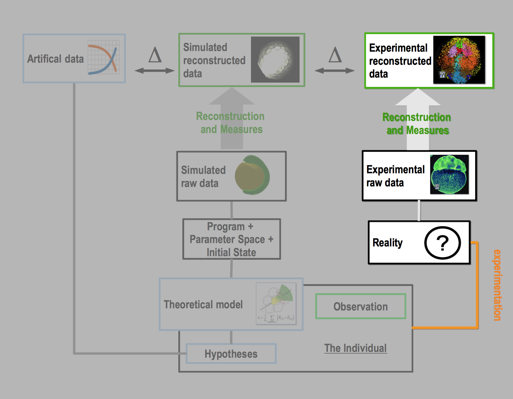
Situation of Chapter 7 in the methodological workflow.
Understanding the morphogenetic processes during animal embryogenesis requires the systematic investigation of cells' behavior and the reconstruction of the cell lineage tree as a branching process in space and time annotated with relevant measurements at the single-cell level (Fig. ). The automated reconstruction of the Nematode cell lineage from confocal images established the first standards but did not provide reliable results beyond the 194-cell stage . More recently, the zebrafish early embryo reconstruction from DSLM (digital scanned light sheet microscopy) images or the reconstruction of Drosophila gastrulation movements from MLSM (multiphoton laser scanning microscopy) also fell short of this goal as they did not provide clean single-cell tracking and were not suitable for cell clonal analysis.
In this chapter, we first summarize the strategy and tools developed by the laboratories hosting this thesis work (Section 7.1) then describe our own addition to this workflow, custom-designed for the modeling needs of the MECAGEN project (Section 7.2). From both the biological and computational points of view (Fig. ), our labs and their partners gave us the opportunity to compare our model with real data and benefit from shared computational power via a cluster and GPUs. The main asset that we could rely upon was the BioEmergences platform, developed on top of two European projects (Embryomics and BioEmergences, funded by the FP6-NEST program), which were devoted respectively to reconstructing the cell lineage tree during animal embryogenesis and measuring the variability between different individuals of the same species.
Today, the BioEmergences platform enables the quantitative reconstruction and analysis of early zebrafish embryogenesis, including the filtering and segmentation of raw imaging data acquired via LSM (Laser Scanning Microscopy) or DSLM (Digital Scanning Light Microscopy), and the automated detection of cell positions by cell tracking. Temporal sequences of 3D images can be directly reconstructed from 2D stacks and sent to a database, which also stores information about the animal model, the imaged period of development, and various technical aspects such as embryo staining and mounting, microscope settings, image size, spatial and temporal resolution. The outcome of the digital reconstruction (essentially cell tracking and segmentation) can be automatically stored in the BioEmergences database and visualized through the interactive visualization interface Mov-It. Mov-It also allows the user to manually correct cell positions and tracking, make annotations and guide pattern classification. Calculations are performed on a computing grid and distributed on many processors at several geographic locations, thus performing in a few days reconstructions that would otherwise require months on a single machine.
7.1. Bioemergences Reconstruction Workflow
In this section we describe the existing BioEmergences platform developed by our team. (Then, in Section 7.2., we will explain our own contribution to the experimental reconstructed data workflow.) First, in 7.1.1, we briefly review the protocol for zebrafish embryo preparation and imaging. Then, in 7.1.2, we introduce the image processing pipeline for the automated cell tracking, segmentation and validation, including the interactive Mov-It visualization platform with its user-friendly fast annotations and corrections via a relational database link. Finally, 7.1.3 summarizes BioEmergences' data analysis stategy and extraction of cell displacement vector fields.
The Bioemergences workflow (Fig. ) is especially designed for processing 4D (3D+time) data from embryos engineered to highlight cell membranes and nuclei via the expression of fluorescent proteins (FPs). In the end, it provides a reconstruction equivalent to a digital embryo represented by a cell lineage tree annotated with quantitative measurements of membrane and nucleus shapes.
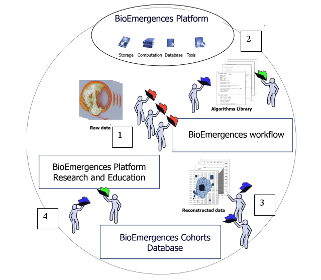
The Bioemergences platform.
7.1.1. Embryo Preparation and Acquisition
Wild-type zebrafish embryos are injected at the one-cell stage with 200pg mCherry/H2B RNA and 200pg eGFP-ras prepared from PCS2+ constructs . Although mCherry, unlike eGFP, bleaches significantly through imaging, this color combination is the best compromise allowing proper staining of the cell membranes for further segmentation. Injected embryos are raised at 28.5°C for the next 3 hours. Embryos are mounted in a 3cm Petri dish with a glass coverslip bottom, sealing a hole of 0.5mm at the Petri dish center where a Teflon tore (ALPHAnov) with a hole of 780\(\mu\)m received the dechorionated embryo. The embryo is maintained and properly oriented by infiltrating around it 0.5 percent low melting point agarose (Sigma) in embryo medium . Temperature control in the room results in a temperature of about 26°C under the objective slightly slowing down development with respect to the standard 28.5°C developmental table . After the imaging procedure, embryo morphology is checked under the dissecting binocular and the animal is raised for at least 24h to assess morphological defects. Embryo survival depends on total imaging duration, average laser power, and image acquisition frequency (or time step \(\Delta\!t\)).
Imaging is achieved with a Leica upright microscope SP5 MLSM equipped with a 20/0.95NA W dipping lens objective (Olympus) or Leica 20/1NA W dipping lens objective. Axial resolution at the sample surface (1.5\(\mu\)m) was estimated by recording 3D images of 0.1 or 1\(\mu\)m fluorescent polystyrene beads (Invitrogen) at the surface of an agarose gel. Simultaneous dual wavelength excitation is performed with pulses at two different wavelengths (980 and 1030nm). At 1030 nm, pulsed laser beam (50Mhz, 200fs) is provided by a solid-state Ytterbium femtosecond oscillator (T-pulse 20, Amplitude Systèmes). At 980 nm, pulsed laser beam (80Mhz, 100fs) is provided by a Ti-Sapphire femtosecond oscillator (Mai Tai HP, Newport Spectra physics). Field size is 700\(\times\)700 or 775\(\times\)775 microns in x, y, 140\(\mu\)m or 100\(\mu\)m in z. Voxel size is 1.37\(\times\)1.37\(\times\)1.37\(\mu\)m or 1.51\(\times\)1.51\(\times\)1.51\(\mu\)m.
7.1.2. Cell Lineage Reconstruction Workflow
The workflow for reconstructing digital embryos is summarized in Fig. and further details are explained below in this section. Raw data is composed of a temporal series of 3D images representing cell nuclei and membranes, which are automatically reconstructed from 2D stacks and stored in the BioEmergences database. Data is automatically sent to the EGEE computation grid through a Web interface and the output results stored in the database. Digital reconstructions can be viewed, corrected, validated and annotated through the Mov-It visualization interface.
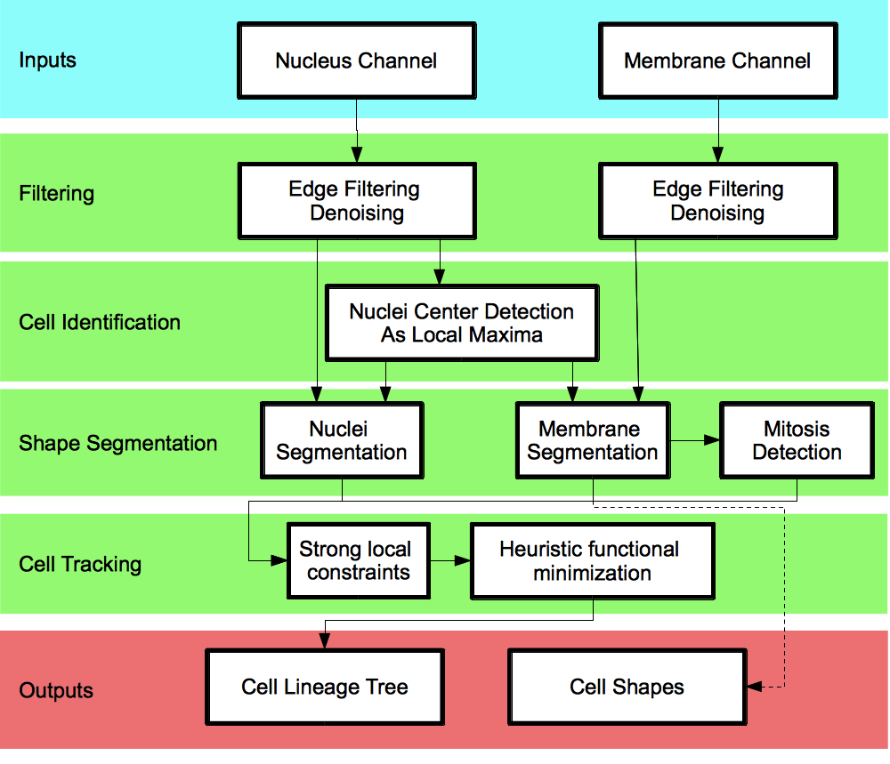
The Bioemergences workflow. Raw images of nuclei and membranes (cyan layer in the diagram) are first filtered by an edge-preserving smoothing method. Cell positions are then extracted from the local maxima of this simplified images versions, and assimilated to the nuclei's positions. They are used to initialize both the segmentation and cell tracking tasks (green layers). The final output is composed of the cell lineage tree and the nuclei/membranes segmentation (red layer).
Filtering
Data from in vivo imaging typically suffers from low constrast. This is why images are first filtered by an edge-preserving and enhancing method, the Geodesic Mean Curvature Flow (GMCF). The GMCF is able to improve the signal-to-noise ratio, faithfully preserving the position of boundaries that define the shape of the structures. Representing the input 3D image by a real function \(u_0(x)\), \(u_0 : \Omega \rightarrow \mathbb{R}\), where \(\Omega \subset \mathbb{R}^3\) is a rectangular spatial domain, the image processing equation can be written:
where \(u_t(x)\) is the unknown function representing the smoothed (filtered) image intensity, \(G_\sigma\) is a Gaussian function with a variance \(\sigma\), and \(g:\mathbb{R}_0^+\to [0,1] \) a non-increasing function representing the nuclei's and membranes' boundaries. Further details can be found in .
Cell identification
The strategy for cell identification is to assume that each cell in the dataset always contains a nucleus, and then ascribe it the position of the center of its nucleus. Nucleus centers are detected by assuming that objects in the image can be seen as humps of image intensity. Thus they are identified as local maxima of a further simplified version of the nucleus images, obtained either by a difference of Gaussian filtering (Barbara Rizzi, oral communication) or by the nonlinear advection-diffusion equation .
Shape segmentation
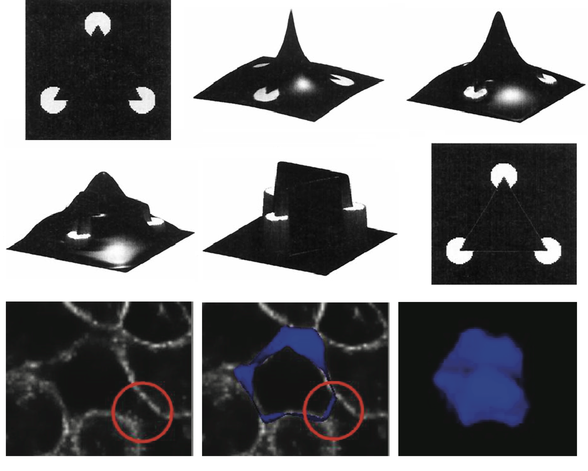
Subjective Surfaces Method. Top and middle rows: 2D example summarizing the main steps of the segmentation algorithm, illustrated on the Kanizsa triangle (from left to right): original image depicting a triangle with missing subjective contours ; construction of a surface located at the center of the triangle; evolution of the surface to minimize its area according to the model equation (two images); steady state condition giving a piecewise constant solution; choice of level set for the surface representing the contour of the triangle. Bottom: Segmentation of a membrane with missing boundary . Raw data displayed as an orthoslice in the x,y plane. Incomplete membrane contour highlighted with a red circle. Segmented membrane represented as an isosurface in blue.
The segmentation of both cell nuclei and membranes is then performed on filtered data using as seeds the positions of the cell centers. Each nucleus/membrane is segmented independently on a region of interest located around the initialization point. Single segmentations are then combined to reconstrust whole volumes. The method used for the segmentation of a single object is a generalized version of the Subjective Surface method, whose originality is its ability to complete missing contours, making it particularly suitable for reconstructing membrane shapes. The main steps are summarized in Fig. . In the 3D case the method consists of minimizing the volume of a 3D manifold embedded in a 4D Riemannian space with a metric constructed on the image itself. Similarly to the filtering subsection, we define here the image as a real positive function in the same image domain \(\Omega\). Initially, this function is \(\Phi_0 = \Phi(x,y,z,0)\), then it evolves over a scale parameter \(t\) and is denoted \(\Phi_t = \Phi(z,y,z,t)\). With this, the model equation reads:
$$\Phi_t = g H \left| \nabla \Phi \right| + \nabla g \cdot \nabla \Phi$$
where \(H\) represents the mean curvature of the function \(\Phi\) in the induced metric, and \(g = g(|\nabla G_\sigma \ast u_0|)\), with \(u_0\) representing the filtered image and \(g\) the image contours in a way similar to the filtering section. Further details can be found in .
Segmented nuclei and membranes are then used in the next step, cell tracking, to provide information about false positive nucleus centers and mitosis. False positive centers generally appear as two or more points inside the same nucleus and produce overlapping segmented nuclei. In this case, only one nucleus is preserved. Similarly, mitosis events are identified as overlapping segmented membranes starting from two initialization points both located inside the segmented region .
Cell tracking
The cell tracking algorithm is the key module of this workflow. It relates temporally the identity of a cell between two consecutive time steps. Starting with the initial cell population, these temporal links create together a tree whose branches split when a cell divides. Let \(I\) be the whole set of cells at all time steps. The unknown tracking graph \(f\) on \(I\) represents the lineage tree, and is determined in three steps:
Initialization through an a priori criterion based on the nearest neighbor: the position of each cell at a given time step is linked to the position of the nearest cell in the following time step.
Local refinement by minimizing a heuristic functional \(E(f)\) whose local minima correspond to a good matching along cell trajectories: this functional is constructed by taking into account the heterogeneous information extracted from the processed images (maximum speed, minimum/maximum cell lifetime, probability of mitosis, changes in image intensities, vector field, cell division rate, etc.) and a biophysical regularization constraint (assumption of an elastic behavior):
$$E(f) = \sum_i {\| X_{f(i)} - X_i \|}_1 + \sum_i \sum_{j \,\in \,\mathcal{N}_i} {\| \left( X_{f(i)} - X_i \right) - \left( X_{f(j)} - X_j \right) \|}_2$$
where \(i\) and \(j\) are the indices of neighbor cells at time \(t\), \(\mathcal{N}_i\) is cell \(i\)'s neighborhood, \( X_i\) is its feature vector, \({\|.\|}_1\) a norm in feature space and \({\|.\|}_2\) a norm in feature deformation space. Minimization is performed according to the simulated annealing algorithm .
Global refinement by processing the obtained tree: discontinuities in trajectories are identified as false negative nuclear centers and cells that live only for a few times steps as false positive nuclear centers.
An example of cell tracking is displayed in Movie .
Cell tracking of dataset 070418a. Color code from yellow to blue through grey indicates the orientation of cell displacement (projection of the speed vector on the y axis). Yellow indicates migration from caudal to rostral, blue indicates migration from rostral to caudal, grey indicates null or mediolateral displacement. Each nucleus center is represented by a small cube with a streamline showing its trajectory for the next 12 time steps. Mov-IT Visualisation Platform. (Large movie, 73.3 MB).
7.1.3. Post Processing and Exploitation
Visualization, annotation, and manual validation
After the image processing steps of the phenomenological reconstruction, the digital embryo can be explored and compared with the original data via the user-friendly Mov-It visualization interface. This GUI tool was designed to allow fast correction of remaining errors, recover the complete clonal history from imaged cells, and analyze cell population dynamics and behavior. Mov-It can display multiple data types in time: original images can appear either in volume rendering, orthoslices or projections; detected cell positions are represented as dots and trajectories as streamlines; segmentation results can be visualized as isosurfaces and superimposed on top of raw data with some transparency. It is also possible to easily select a cell position and observe its temporal position along the lineage tree, visualized as a set of line segments splitting into two at each mitosis event. Cell positions and trajectories can be manually corrected to validate the lineage tree. Cell populations can be classified either by automated selection based on cell statistics (such as speed, lifetime, orientation of divisions, volume, or number of neighbors) or by manual selection. For example, Movie shows cells trajectories over time combined with a fate map until somite stage. Presumptive organs have been manually selected at the end of the acquisition, then backtracked. The net result is the creation of fate maps, as shown in Movie about the interactions between prechordal plate, presumptive hypothalamus and presumptive ventral telencephalon.
Cell trajectories displayed as streamlines and colormap according to the zebrafish fate map at somite stage. Dataset 070418a, reconstructed embryo from animal pole view. Colormap as in the following. Yellow, hypoblast including prechordal plate and notochord; red, presumptive hypothalamus; pink, right eye; light pink, right optic stalk; purple, left eye; light purple, left optic stalk; green, ventral telencephalon; gold, dorsal telencephalon, placodes and neural crest; light blue, ventral midbrain; light brown, dorsal midbrain and dorsal diencephalon; blue, ventral hindbrain; dark brown, dorsal hindbrain; dark blue, ears. Mov-IT Visualisation Platform.Relative movements of cells selected in the prechordal plate (yellow), presumptive hypothalamus (red) and presumptive ventral telencephalon (green). Dataset 070418a, raw data displayed as orthoslice. Lateral view, rostral to the right. Mov-IT Visualisation Platform.
Automatic validation
As manual validation by visual inspection is a very time consuming task, the BioEmergences platform also offers an automated method to validate the tracking process. The idea is to compare the tracking of the entire population of cells of the embryo (helped by manual intervention and termed gold standard) to the tracking of only a subpopulation in the same embryo, and assume that the accuracy of the lineage tree reconstruction in this subpopulation is as good as the gold standard. To this aim, a double labeling of cells is first obtained by transplanting about 100 cells between the high stage and the sphere stage from a donor embryo with double stained nuclei (H2B/mcherry through RNA injection into H2A/eGFP transgenic embryos) into a transgenic host with green nuclei . Then, tracking comparison is performed through a mapping that minimizes the distance between matching cells.
Exploitation
An example of exploitation and post-processing calculation on top of the reconstructed embryo is illustrated in the figures below (Figs. and ), which represent the cell kinematics of the embryonal structure as a velocity map and its singularity points .
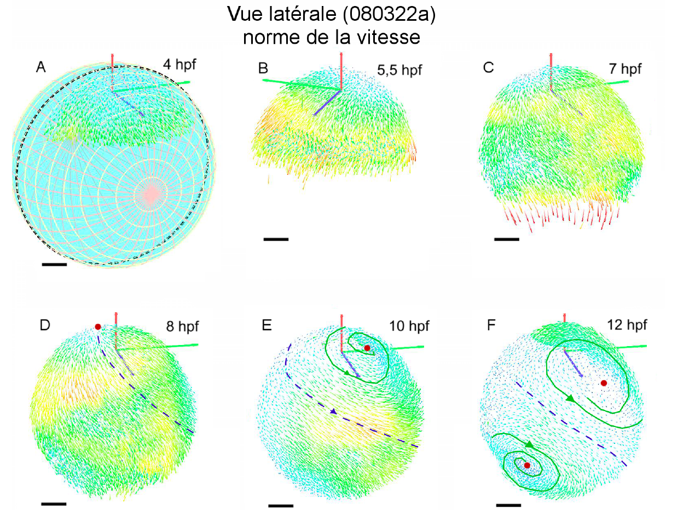
Evolution of the averaged speed field with its norm between 4 and 12 hours of development in zebrafish embryo. Dataset 080322a, lateral view. Green axis points towards the dorsal side, red axis towards the animal pole. Colormap between light blue and red related to the norm of the averaged speed field. Singular points in red, separatrices in blue, flow pathways in green. Image and caption adapted from B. Lombardot (2010) .
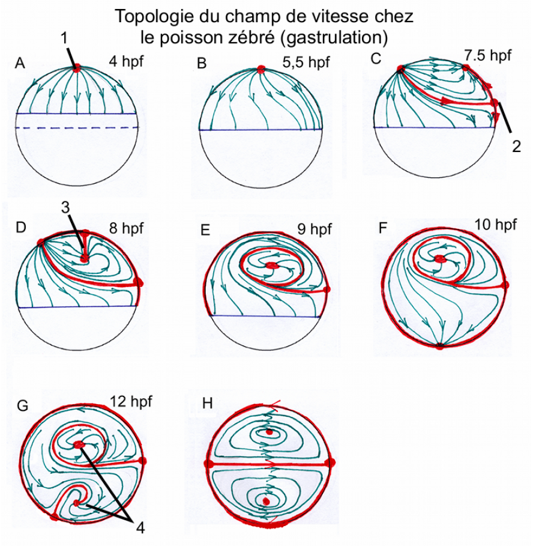
Simplified topology of the speed field in zebrafish embryo between 4 and 12 hours of development. Circles in each figure represent a schematization of the embryo in a lateral view. Dorsal side on the right, ventral on the left. Animal pole on the top, vegetal pole on the bottom. Separatrices represented as red lines, singularities as red dots. Image and caption adapted from B. Lombardot (2010) .
7.2. Reconstructing In Toto Deformation Fields
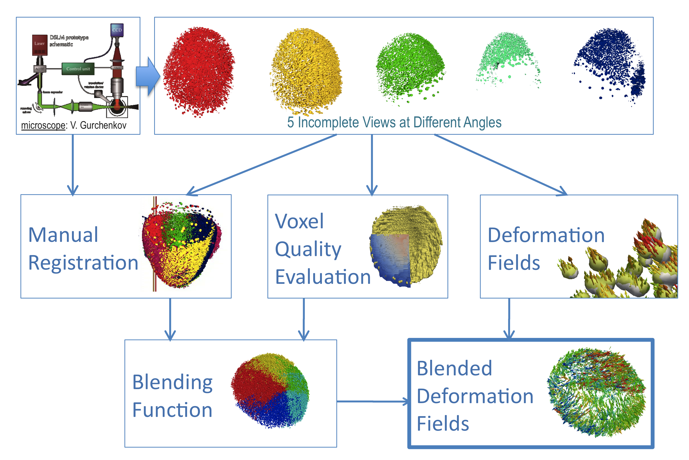
Global diagram of the reconstruction workflow of the in toto deformation fields.
This section is dedicated to an additional module of the Bioemergences workflow that we developed especially for our study (Fig. ). It takes in input a series of raw images from a Digital Scanning Light Microscope (DSLM) and produces in output a global deformation field, composed of six image processing components (explained in Sections 7.2.1-5 below).
The rationale of this additional module is the following. Biphotonic microscopy devices do not allow the capture of the entire zebrafish embryo because of optical loss of signal and image deformation in the depth of the tissue. One solution is to take advantage of the spherical shape of the embryo during early gastrulation and rotate it to capture multiple views (Fig. ), thus covering the whole volume without major image degradation. The problem with this solution is that the total imaging time is greater since we need consecutive angles of view to capture superposed region of the embryo, and cells move slightly in the meantime. Fortunately, a recent microscopic technology, the Digital Scanning Light Microscope (DSLM), increases the speed of scanning thanks to its ability to illuminate and record the signal emitted by the embryo plane by plane, and not just point by point. Faster recording allows a better comparison and match of the 3D volumes to extract and reconstruct the dynamics of the cell trajectories described in the previous section.
Original five views produced by the Digital Scanning Light Microscope (DSLM). Isosurfaces have been extracted from the DSLM raw data. Each view is obtained by rotating the embryo 72 degrees (one color per angle of view). A: Sphere stage. B: 40 percent epiboly. C: 75 percent epiboly. D: 90 percent epiboly. E: 8-somite stage. F: 12-somite stage.
At this point, however, we ended up with a quality of signal different from the one generated by the biphoton illuminated device used in the previous section, therefore the reconstruction strategies had to be adapted accordingly. We decided to set aside the reconstruction of the in toto lineage tree for later investigation, and instead work on a more accessible reconstruction: the in toto deformation fields of the embryo. This workflow is presented in detail in the subsections below. We programmed it using the OpenGL and ITK/VTK libraries.
7.2.1. Manual Registration
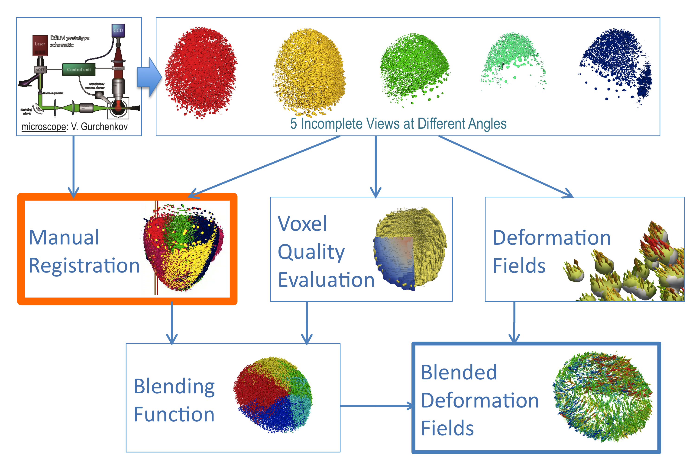
The manual registration component. This process aims at inferring the parameters required for a spatial registration of the five angles of view.
We explain here the manual registration component (Fig. ). The DSLM allows rapid imaging of the embryo and, coupled with a rotating device, the recording of multiple views of the same embryo obtained from different angles (Fig. ). We have been using an exact replicate of the DSLM described in . In this whole section 7.2, we use the following conventions to name the axes of each view: the axis from the camera to the embryo is the z-axis or depth, the horizontal axis of the light plane is the x-axis, and the vertical axis of the light plane is the y-axis.
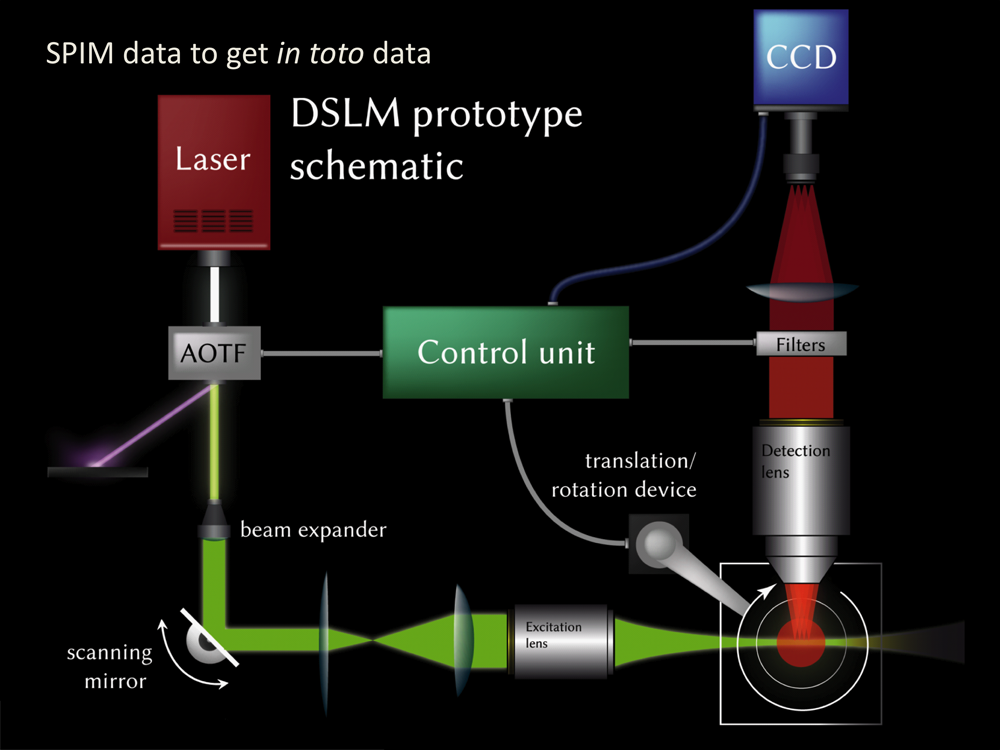
Digital Scanning Light Microscope (DSLM) setup. Diagram after P.J. Keller, E. Stelzer et al. , adapted by V. Gurchenkov.
Reconstructing an in toto view of the embryo requires the spatial fusion of the five views within a reference frame. While sophisticated methods of non-rigid spatial registration based on raw image processing and wavelets are currently being developed by our team , we decided to design our own for faster use. Here, we rely on the knowledge of the rotating motion of the microscope plate to geometrically infer a rigid spatial registration. Moreover, we assume that the registration parameters remain constant throughout the imaging process since the embryo is not moving in the agarose chamber and the rotating plate executes precise and controlled displacements. Thus we use a single time step to calculate the parameters, which will be generalized to all other time steps.
The embryo is mounted onto a cylindrical agarose tube. The tube is fixed on a table that can rotate around the cylinder's central axis and translate it. As the embryo never passes exactly through that central axis, the software controlling the motion of the table must be calibrated before the time-lapse imaging starts. The calibration phase amounts to the following process (Fig. ): the operator must center the embryo in the light plane. Once the position is validated, the software performs a 90 degree rotation and the operator must center again the embryo in the light plane. Based on the translation vector created by the operator's action, the software computes the relative position of the embryo with respect to the cylinder's center. However, the computed relative position is only an approximation of the real relative position because the operator's estimation is never exact. This is due to the fact that s/he only sees a projection along the z-axis, and as the embryo rotates, the aspect on the screen changes.
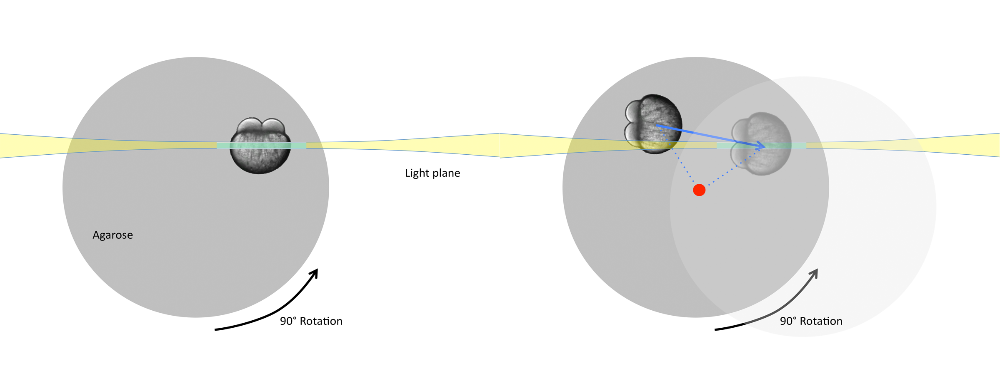
Schema of the calibration phase. Left: The operator centers the embryo in the light plane. Right: To decipher the relative position of the embryo with respect to the center of rotation, the software performs a 90 degree rotation, then the operator must translate the embryo back into the light plane (blue vector).
We have programmed a graphical user interface to manually correct the estimation error and determine the optimal relative position (Fig. ). The two parameters controlled by the user are the coordinates of the correction vector. As the user moves this vector, s/he can directly observe the motion of the five views computed in real time, hence determine the optimal correction vector. For this task, the nuclei of the margin (yolk syncytial layer), which are separated from the mass of the deep cells, offer useful landmarks for a precise determination of these vector coordinates, i.e. the best match (Fig. ).
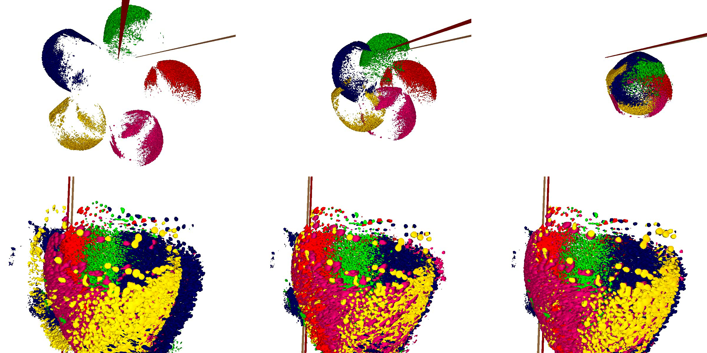
Graphical user interface designed to infer the estimation of the center of rotation. The red line passes through the center of rotation determined by the calibration phase. The brown line passes through the corrected center of rotation. As the user moves the brown line, the five angles of views are repositioned in real time, allowing to infer the best estimation of the center of rotation.
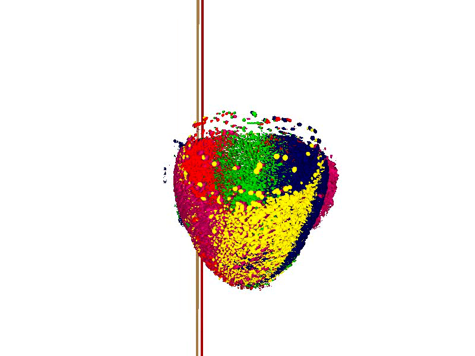
Best match for the rigid manual registration. The marginal yolk nuclei visible on top of the embryo are used to estimate the correct registration parameters.
After the five views have been registered for one time step, the same registration parameters will be applied to the whole time-lapse imaging data in the other components of the workflow (Fig. ). However, as it can be noticed in Fig. , the optical deformation induced by the perturbation of the light path through the embryonic tissue causes the result to be rather suboptimal. Other components of the workflow (Voxel Quality Evaluation and Blending Function below) will take care of removing these defects in each view.
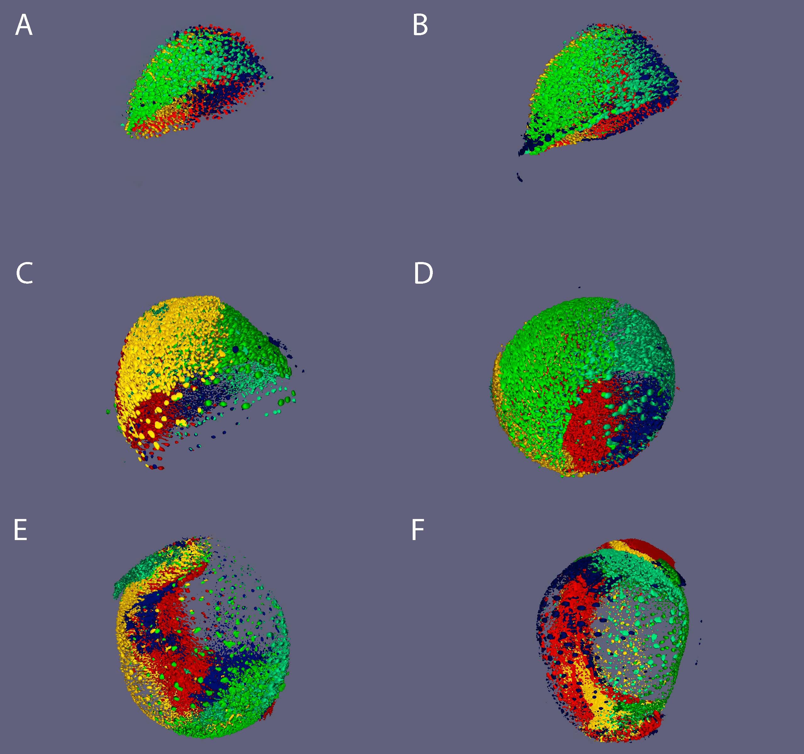
The five DSLM views superimposed by rigid registration. These views are identical to the ones shown in Fig. . A: Sphere stage. B: 40 percent epiboly. C: 75 percent epiboly. D: 90 percent epiboly. E: 8-somite stage. F: 12-somite stage.
7.2.2. Voxel Quality Evaluation
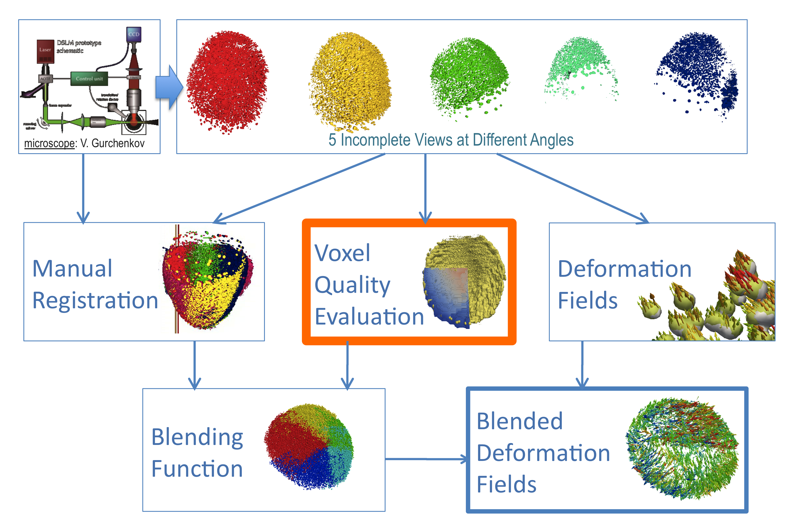
The voxel quality component. This process aims at quantitatively evaluating the local image quality for each angle of view.
The voxel quality component runs independently from the manual registration component. Its goal is to determine what spatial region of the volume shows the best signal quality, in each view and at every time step. The actual output of this component is to attribute a quality score to each voxel of the volume. The rationale here is that the farther the light travels through the embryo, the more degraded the signal becomes. The light beam through the embryo is split into two orthogonal beams: the continuation of the original light beam from the laser, and a new light beam emitted by the fluorescent molecules of the embryo toward the camera. For the voxel quality component, the relevant part of the light beam is inside the embryo. We performed a geometrical computation to determine the length of the light beam from each voxel of the volume to the physical border of the embryo. For the evaluation, we first calculated the border and then the beam length. This task can be summarized as follows:
1. To eliminate the low amplitude background noise, the average voxel intensity of the volume was computed to determine the isosurface of the nuclei's shapes (Fig. A). This isosurface is a mesh of triangles.
2. After a random decimation of the isosurface triangles to decrease the number of vertices, small spheres were centered on these vertices and resized in order to produce a contiguous embryo surface without holes. Then, a binary mask of the image was extracted to store the outer shape of the embryo.
3. We eliminated spurious signal traces (blue arrows in Fig. B) that may have subsisted outside of the embryo shape by keeping only the closed region that had the largest volume.
4. The spheres creating an embryo larger than desired, we eroded the volume by an amount equivalent to the radius of the spheres to obtain the actual physical border of the embryo. The reduced volume was stored as a binary data array with value 1 (resp. 0) for voxels inside (resp. outside) the border (Fig. C).
5. Since each view was oriented with its z-axis along the camera path and x-axis along the illumination plane, it was now straightforward to compute both distances from the border by counting the number of 1's along those axes (Fig. D,E). The voxels that were outside of the border received an eliminatory score as they could not be used for the registration task (Fig. F).
6. Finally, we also eliminated the voxels located beyond a cutoff distance (about 200\(\mu\)m) in both directions as they belonged to parts of the image that were too degraded to be used (Fig. G,H,I).
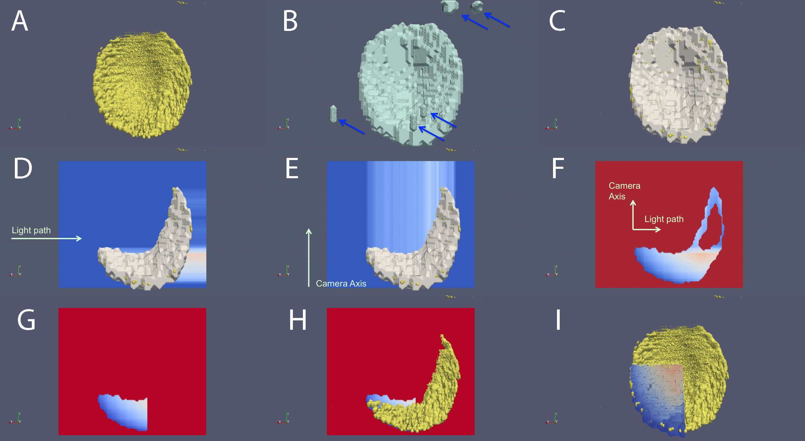
The various steps of the voxel quality evaluation component. See text.
7.2.3. Blending Function
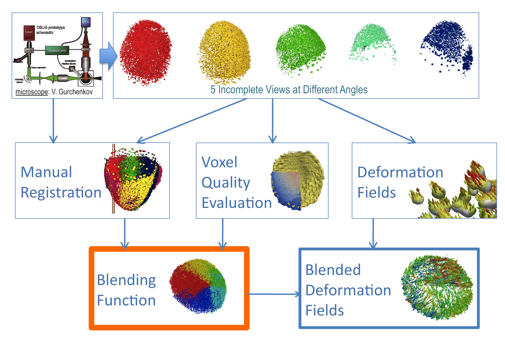
The blending function component. This component builds a function determining what original angle of view has the best quality score for each voxel in the registered space.
The objective of this task is to use both the manual registration component and the voxel quality evaluation component described in the previous subsections to build a blending function. For each registered voxel, this function selects among all five views which one will be used in the in toto reconstruction. In other words, the blending function produces a 3D integer volume in which each voxel contains the identifier (id, from 1 to 5) of the most relevant angle of view according to its quality evaluation. Knowing the coordinates of the center of rotation, we were able to precisely position all five views within a common reference space (Fig. , left). In this space, we visited each voxel and checked for each projected angle of view whether it was located inside the embryo border evaluated in the previous component (Fig. , right). Then, we attributed to this voxel the id of the angle of view under which it had the best quality, or 0 if it was lying outside of all borders. This produced the integer mask shown in Fig. . Note that instead of the maximum voxel quality, we could also have used a weighted average of all angles. An output of the blending function applied to the raw voxel intensities is shown in Fig. , providing a first example of in toto registration of the embryo. In our workflow, however, we applied the blending function to the deformation fields calculated in the next component.
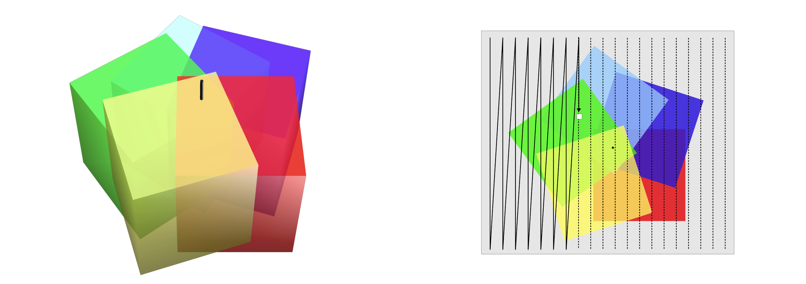
Relative positions of the five views in the registered space. Left: The five cubes represent the original reference frames of the five different views. Right: A 2D illustration of the sequential visit of the registered voxels.
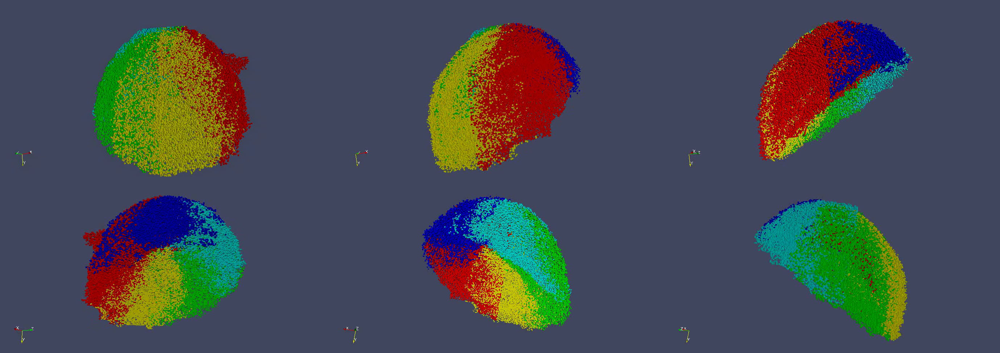
Five-valued blending function mask. In the registered space, the color of each voxel represents the id of the original angle of view under which it has the best quality.
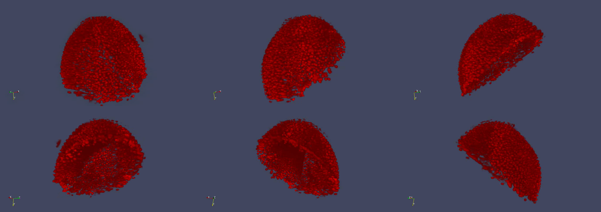
Output of the blending function applied to the raw voxel intensities.
7.2.4. Deformation Fields
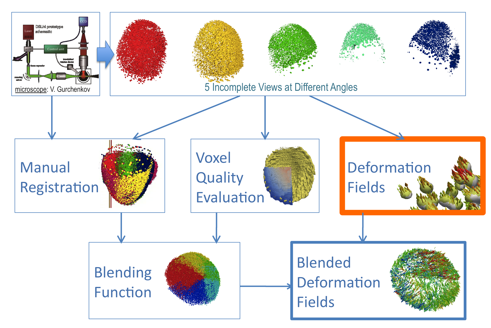
The deformation field component. This component produces a 3D vector field that indicates the direction and amplitude of local displacements in each voxel.
The goal of the deformation field component is to reconstruct the spatial deformation that relates two 3D volumes produced by the DSLM at consecutive time steps under the same angle of view (one of the five; Fig. ), which we denote here by V and V'. The notion of image deformation is close to the notion of optical flow, as its goal is to compute the image motion between consecutive images. We employed a non-rigid registration method called Demons Registration: it acts as if voxel-sized demons were pulling and pushing the voxel of volume V' along the local gradient of voxel intensity in volume V. This method is iterative and the demons run for a predefined number of steps, or until some matching criterion is reached. The implementation that we used here is based on Thirion's algorithm . Fig. shows the superposition of the isosurfaces of V (in white) and V' (in yellow) at the marginal region of the zebrafish embryo. As the deformation field was computed in the entire images of V and V', and not only at the position of the nuclei, we had to filter out spurious vectors from the resulting field. The vectors belonging to voxels located inside the nucleus envelopes (corresponding to another isosurface obtained by thresholding the voxels at twice the mean volume intensity) were retained, while the others were discarded. We calculated the deformation fields for each angle of view separately. The next component below will take care of blending them together.
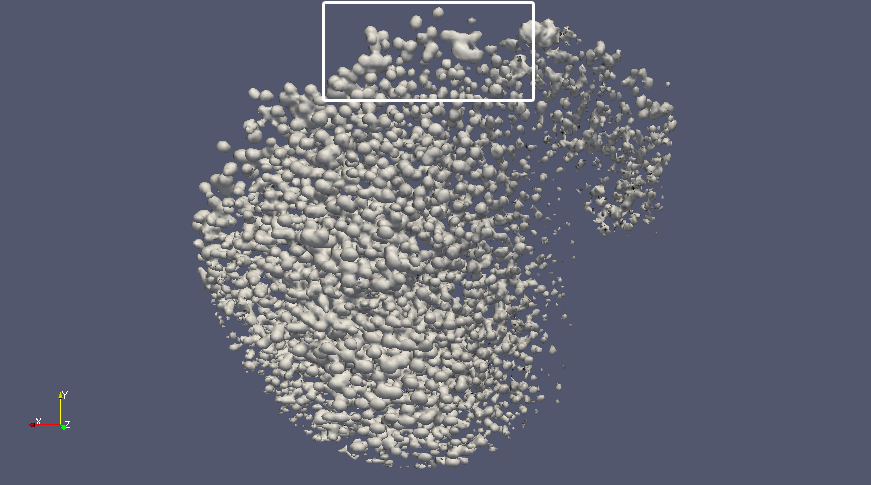
One volume V under one of the five angles of view. The white grains represent the envelopes of the nuclei calculated by thresholding the voxels at twice the mean intensity of V.
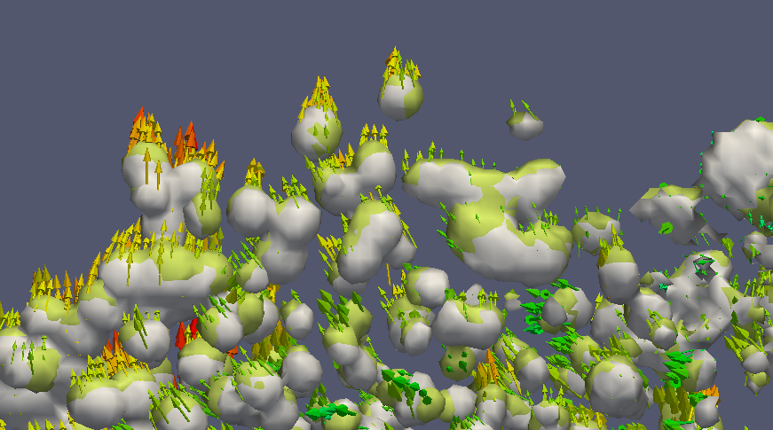
Deformation field between two volumes V and V' at consecutive time steps. The white isosurface represents V, the yellow isosurface represents V'. Not all deformation arrows are displayed.
7.2.5. Blended Deformation Fields
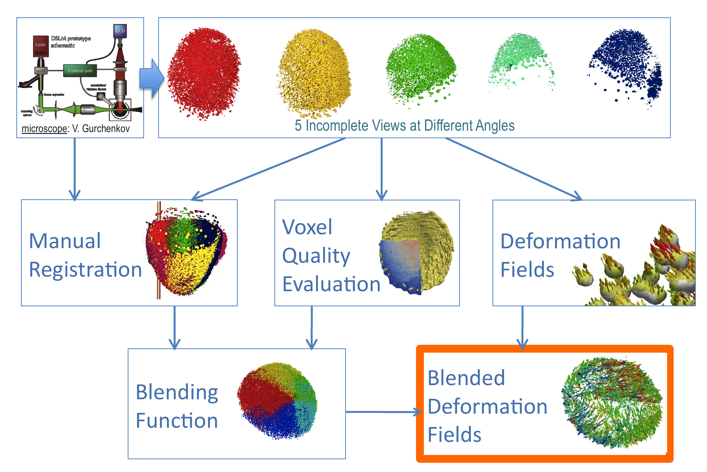
The blended deformation field component. This component combines the blending function with the 3D deformation vector field.
Finally, the blending function obtained in Section 7.2.3 is applied to the five deformation vector fields obtained in Section 7.2.4. Each voxel of the reference volume simply receives the deformation vector from the angle of view that has the best quality evaluation score. This produces our final output, the blended deformation field.
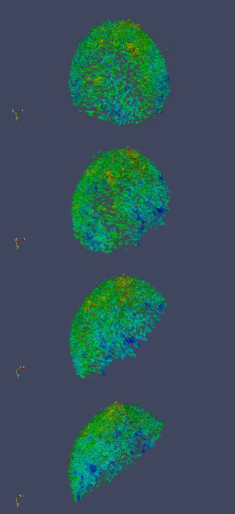
Blended deformation field at a given time step viewed from four different angles. (Note that these angles do not correspond to the original angles of view.)
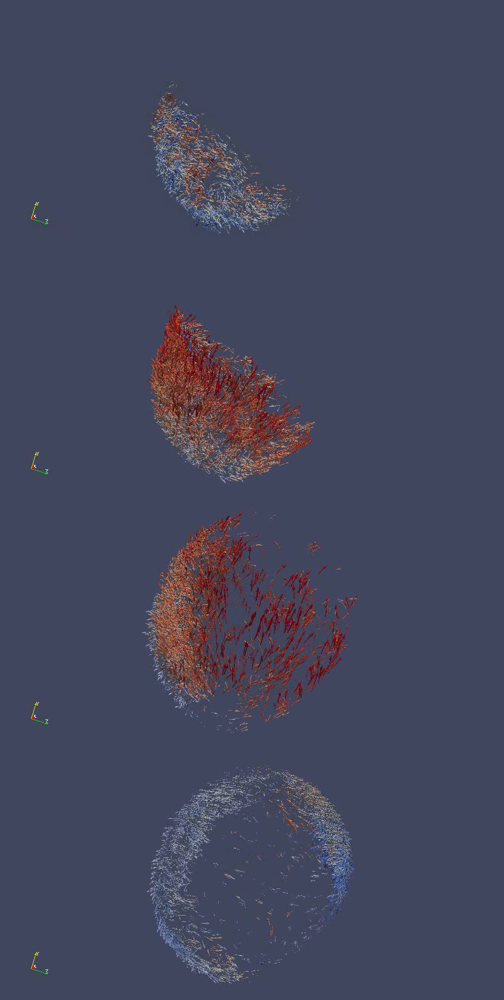
Blended deformation field at successive time steps viewed from the same angle.